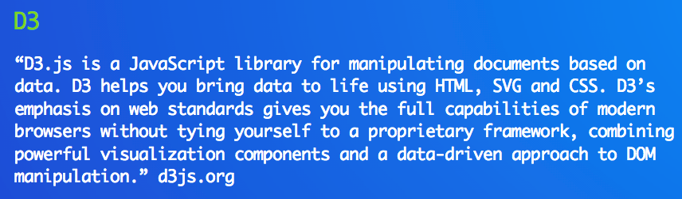
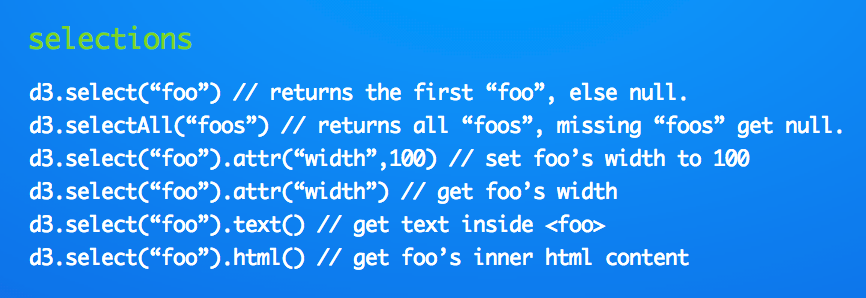
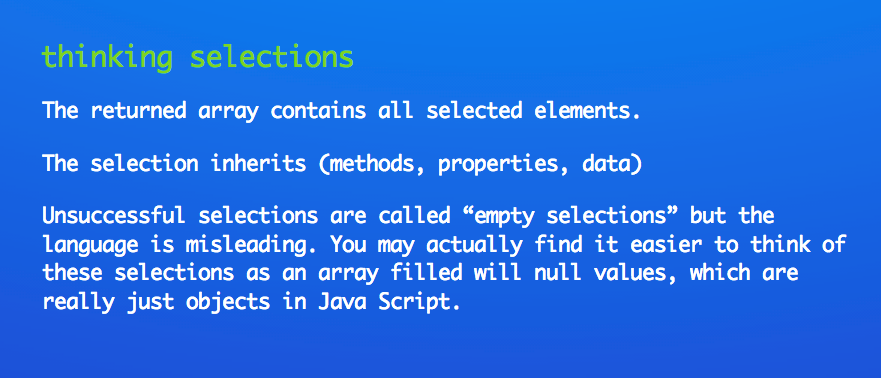
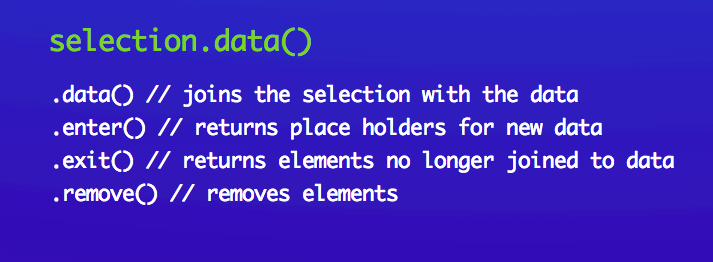
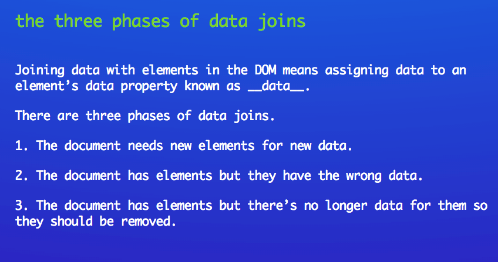
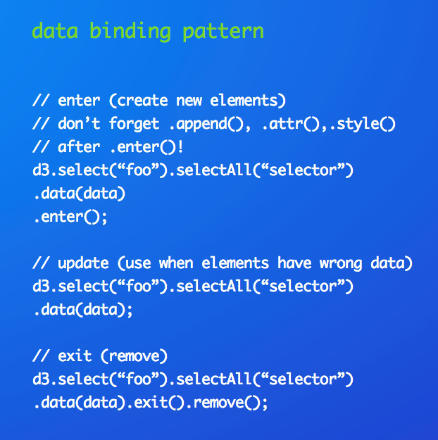
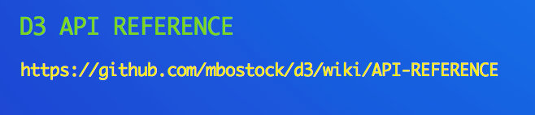

An Introduction to D3js and Responsive Design
slides @ https://github.com/markarios/sacdatviz
Goals
1. To introduce D3 concepts that are foreign to a lot of people 2. To show you how to think about methods 3. To have you create your first visualization based on what you learned today
About
mark.rios@statvisions.com
1-866-955-1007
Data Visualization (R, D3, Crossfilter)
What's D3JS?

http://christopheviau.com/d3list/gallery.html
Question: But what does it really look like?
9,233 lines
What's the barrier to entry look like?
How should we prepare our mind before we start learning d3js?
Question: Where do you get D3?
http://d3js.org/d3.v3.min.js
or
http://d3js.org
Question: Once we get data how do we access it?
function(d){ return d;}
Question: How do we get data into our visualization?
d3.csv("file.csv", function(data, error){
// your code
});
1. Your code doesn't run until after the download completes.
2. Be aware that Javascript runs other code while your download is happening
3. d3.csv requires a web server http://bost.ocks.org/mike/block/
When you think of DOM Objects remember
1. Objects inherit properties and methods
2. No Object is ever really empty, it still has properties and methods
3. DOM objects have a hidden __data__ property
Question: What does this have to do with D3js?
Recall that D3 is made up of many methods
So when you think of the D3 object always think:
D3.method
What is data binding in the dom?
data = ["red", "blue", "yellow", "purple"];
< div style="background-color:red" > </div>
< div style="background-color:blue" > </div>
< div style="background-color:yellow" > </div>
< div style="background-color:purple" > </div>
Question: How do we access this data?
data = ["red", "blue", "yellow", "purple"];
data[0] = "red";
data[1] = "blue";
data[2] = "yellow";
data[3] = "purple";
0, 1, 2, 3 are called an objects index
Question: How do access these index numbers in D3js?
function(d,i){ return i;}
Question, how do we start data binding?

Question, how should we think about selections?

Now that we know how to think of selections, how do we bind data?

But how should we think of these?

But how do we use these in D3?

But I need to learn more, where do I go?

What are some common methods called from the D3 API?
d3.select(selection)
d3.selectAll(selection)
d3.select(selection).remove()
d3.select(selection).classed(foo, true)
But now give me methods for interactivty?
selection.transition().attr("x",x0).attr("y",y0);
selection.transition().duration(t0); // t0 milliseconds
selection.on("mouseover", function(){ d3.select("this").method });
selection.on("click", function(){
d3.select("this").method });
But how do I remember all of this?
http://www.jeromecukier.net/wp-content/uploads/2012/10/d3-cheat-sheet.pdf
https://github.com/alignedleft/crazy-data-circles
function rand(value) { return Math.floor(value*Math.random());}
var colorBrewer = ['rgba(141,211,199,.25)','rgba(255,255,179,.25)','rgba(190,186,218,.25)','rgba(251,128,114,.25)'];
function randColor(){ return colorBrewer[Math.floor(Math.random()*4)]; };
for (var i = dataPoints - 1; i >= 0; i--) { data.push({radius : ballRadius,x: rand(width), y: rand(height), color: randColor() }); };
Now visithttp://bit.ly/Ur3nkO and get to work!
Use a spacebar or arrow keys to navigate